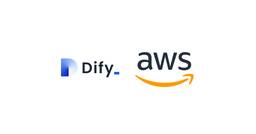
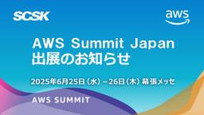
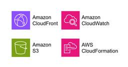

TechHarmony
https://blog.usize-tech.com
TechHarmonyは、SCSK株式会社が運営するエンジニアブログです。SCSKのエンジニア自らがクラウドを中心としたナレッジを積極的にアウトプットすることで社会への還元を行うとともに、更なるスキルアップを目指します。
フィード

簡単にサービスを保護！QSP(Quick Service Protection)について
TechHarmony
みなさん、こんにちは。SCSK株式会社の津田です。 LifeKeeperではサービスをリソース化してHAクラスタの保護対象とする際、どのオプション製品を使うか？ というのはLifeKeeperの設計フェーズでのポイントの […]
2日前

LifeKeeperの管理コンソール「LKWMC」を解説
TechHarmony
LifeKeeperでは管理コンソールを用いて、設定投入やパラメータ確認、手動切替などを手軽に行うことが可能です。 今回は、LifeKeeperの管理コンソールである「LKWMC」について解説していきます。 概要 Lif […]
2日前

DifyをAWS上にホスティングして、全社トライアル環境を提供しています！～Difyで始めるRAGアプリケーション開発～ 1
1
TechHarmony
こんにちは。SCSKのふくちーぬです。 私が所属する技術戦略本部では、『2030 共創ITカンパニー』の実現に向けて、全社技術戦略の策定や先進技術を開拓し、新たな価値創出・社会実装に向けた様々な取り組みを進めております。 […]
5日前

AWS Summit Japan 2025に出展します！
TechHarmony
こんにちは、SCSK株式会社の伊藤です。 今年も、延べ 40,000 人以上が参加する、日本最大の “AWS を学ぶイベント” AWS Summit Japan 2025が 6月 25 […]
5日前

Zabbix6.0以前のバージョンはサポート期間切れに要注意！バージョンアップの重要性について解説します
TechHarmony
こんにちは。SCSKの上田です。 Zabbixには、サポート期間があることをご存知でしょうか？ Zabbixを安心して利用し続けるためには、サポート期間を把握し、適切なバージョンアップを行うことが必要不可欠です。 今回は […]
5日前

Amazon CloudFront のアクセスログを Amazon S3 にパーティション分けして保存する [AWS CloudFormation 使用]
TechHarmony
こんにちは、広野です。 Amazon CloudFront のアクセスログをパーティション分けして Amazon S3 に保存できるようになるアップグレードがありましたので、既存アプリの構成を変更しました。AWS Clo […]
6日前

ローカル管理者が無効のAmazon WorkSpacesにおける日本語キーボードの有効化
TechHarmony
こんにちは、ひるたんぬです。 GWも終わり、しばらくは祝日のない日が続きますね。 今年のGWはいわゆる「飛び石連休」でした。カレンダーを眺めているとふと気になったのですが、なぜ、日曜日の祝日は振替休日となるのに、土曜日の […]
10日前
Zabbixで複雑なログ監視を実装する方法-count関数編-
TechHarmony
こんにちは。SCSKの坂木です。 今回はZabbixのcount関数を使った複雑な条件のログ監視を行う方法をご紹介します。 ログ監視は、例えば「”ERROR”という文字列が含まれる」「イベントIDが”777″」などシンプ […]
11日前
【SASE簡単解説】SASEのよくある懸念点と、導入しやすいタイミングを解説！
TechHarmony
こんにちは。角田です。 先日、SASEについて初心者向けの解説記事を投稿しました。 【SASE簡単解説】SASEとは？ 初心者が1から解説「近年バズワードとして注目されていることは知っているが、調べてみてもよく分からない […]
15日前
【ServiceNow】レコード更新箇所の特定方法
TechHarmony
初めまして。 SCSKの庄司です。 今回は、ServiceNowで「レコードのどの部分が、いつ、誰によって更新されたのか」の情報を取得・確認する方法を紹介していきます。 本記事は執筆時点（2025年5月）の情報になります […]
15日前
【ServiceNow】更新セット移送の基本ガイド
TechHarmony
こんにちは。SCSKの北川です。 今回はServiceNowの更新セット移送についてまとめてみました。 環境間の移送に不安がある方の参考になれば嬉しいです。 本記事は執筆時点（2025年4月）の情報です。最新の情報は製品 […]
15日前
【Google Cloud】Infrastructure Managerを使ってみた
TechHarmony
こんにちは、SCSK石黒です。 最近案件でTerraformを触る機会がありIaCについて勉強中なのですが、 Google Cloudが提供するIaCサービス、Infrastructure Managerを触ったことが無 […]
15日前
【ServiceNow】YokohamaリリースのUIの変更点を探してみた
TechHarmony
2025年3月18日（火）に横浜みなとみらいにて開催されたYokohama リリースミートアップで初めてLT登壇させていただきました。 今回の記事は、LTの内容をブログとして再掲したものとなります。 【セッション資料】 […]
17日前
【ServiceNow】CSMポータルで「ドラフトして保存」を有効化するには
TechHarmony
ServiceNowのCSMポータルにて、アイテムを「ドラフトして保存」できるようにするという実装を行う機会があったので、その方法を紹介させていただきます。 本記事は執筆時点（2025年4月）の情報です。最新の情報は製品 […]
17日前
【CSPM】Prisma Cloud の API を呼び出してみた② ～長期間未使用のアクセスキーをPythonで一覧化してみた～
TechHarmony
はじめに 今回は「Prisma Cloud の API を呼び出してみた」の第二弾です。 1回目はこちらで、APIでアラート件数を取得する方法を記載しています。 Prisma Cloudのアクセスキーについて解説後、最後 […]
18日前
AWS Organizationsを使用できない場合にAWS Configを全リージョンで有効化する方法 [AWS CloudFormationテンプレート付き]
TechHarmony
こんにちは。SCSK渡辺(大)です。 今回は、 AWS Organizationsを使用できない場合にAWS Configを全リージョンで有効化する方法 を考えてみました。 背景 AWSアカウントのセキュリティ監視をした […]
18日前
【CSPM】Prisma Cloudで追加された重要度の高いポリシーを解説（2025年1月～4月）
TechHarmony
はじめに Prisma Cloudでは月に一回アップデートがあります。 内容としては新機能のリリース情報やUI変更のお知らせからAPIの更新情報など多岐にわたりますが、今回は2025年1月～4月に新たに導入となった監視ポ […]
20日前
Amazon Bedrock 基盤モデルに並列に問い合わせるジョブをつくる
TechHarmony
こんにちは、広野です。 大量のデータに対して、生成 AI で同じプロンプトを使用する問い合わせをしたかったので、CSV データを読み込んで結果を CSV に追記して返してくれるジョブを AWS 上に作成しました。 簡単な […]
20日前
Amazon CloudWatchのアラート通知をMackerelに移行してみた
TechHarmony
こんにちは、SCSKの嶋谷です。 AWSサービスの監視は、Amazon CloudWatchアラームで監視対象のメトリクス(CPU使用率やディスク使用率等)に関するアラート条件を設定してAmazon SNS(Simple […]
20日前
Amazon Bedrockナレッジベースで「あの映画なんだったっけ？」を解決したい
TechHarmony
こんにちは！佐藤です。 「あれ、昔見た映画なんだっけ…タイトルが全く思いだせない…」 こんな経験、ありませんか？ 映画の一場面やキャラクターは覚えているのに、タイトルが思い出せなくてモヤモヤする…。 友人と話 […]
20日前
Prisma Cloudの監査ログを保管してみた
TechHarmony
今回は、Prisma Cloud環境のセキュリティログをどのように管理し、監査に備えることができるかについてお話ししていきます。 Prisma Cloud の 監査ログ 監査ログ機能 企業にとって、セキュリティは常に最重 […]
20日前
システム監視ツール「Zabbix」のSaaS版！「Zabbix Cloud」を徹底解説 ～セットアップ編～
TechHarmony
こんにちは。SCSKの上田です。 昨年、Zabbix Cloudというサービスがリリースされました。監視ソリューションとして実績のあるZabbixがSaaS型になり、インフラの準備無しで監視を開始できるという点が注目を集 […]
20日前
HAクラスタ/LifeKeeper用語説明2
TechHarmony
こんにちは、SCSKの前田です。 2回目は、LifeKeeperの内部で使われている機能についての用語を説明したいと思います。 1回目の用語説明に関しては以下のリンクからどうぞ！ HAクラスター/LifeKeeper用語 […]
25日前
【Catoクラウド】Internet FWを見直したい
TechHarmony
こんにちは。SCSKの中山です。 1月末のアップデートで、ちょっと面白い機能が追加されました。 「Autonomous Firewall Insights」という機能ですが、Product Updateでは […]
1ヶ月前
Amazon Cognito ユーザーインポートジョブをつくる [2025改善版]
TechHarmony
こんにちは、広野です。 以前、以下の記事で Amazon Cognito ユーザーのインポートジョブを作成していましたが、大量のインポートではエラーが発生する問題を抱えていました。本記事では、少し改善したバージョンを紹介 […]
1ヶ月前
Prisma Cloud の新機能 Copilot を使ってみた
TechHarmony
みなさんこんにちは。SCSK 鎌田です。 今回は、少し前に機能追加された、Copilotを使ってみた感想と、その使い方について解説します。 リリースされたばかりのこのAIアシスタントは、クラウドセキュリティの管理を効率化 […]
1ヶ月前
CIEMとは？Prisma CloudのIAMセキュリティを解説
TechHarmony
CIEMとは CIEM(Cloud Infrastructure Entitlement Management)とは、日本語でクラウドインフラストラクチャ権限管理を意味し、クラウド環境のIDと権限を管理するプロセスを指し […]
1ヶ月前
【Google Cloud】Agentspaceについてご存じですか？⑦「NoteBookLM 編」
TechHarmony
こんにちは！SCSKの八巻です。 Google Cloud にて利用できる『Google Agentspace』についてご存知でしょうか？？ Agentspaceを利用することで、 組織全体のコンテンツを連携させ、根拠に […]
1ヶ月前
【SCSK 出展告知】Zabbix セミナー in 東京 2025
TechHarmony
こんにちは、SCSKの坂木です。 5月末に、Zabbix Japanが主催するZabbix セミナー in 東京 2025が開催されます！ このイベントでは、Zabbixを知らない方から既にご利用いただいている方、そして […]
1ヶ月前
パ。―Patch Managerの設定について―
TechHarmony
こんにちは。SCSKの坂木です。 さっそくですが、某人気アニメを捩ったタイトルにつられてこのページをクリックしてくれた方へ、本ブログは一切地球の運動を感じられないバチバチの技術ブログとなっております。 ただ、せっかく開い […]
1ヶ月前
【Google Cloud】Agentspaceについてご存じですか？⑥「Deep Research 編」
TechHarmony
こんにちは！SCSKの八巻です。 Google Cloud にて利用できる『Google Agentspace』についてご存知でしょうか？？ Agentspaceを利用することで、 組織全体のコンテンツを連携させ、根拠に […]
1ヶ月前
【Google Cloud】Agentspaceについてご存じですか？⑤「ブレンドRAG編」
TechHarmony
こんにちは。SCSKの山口です。 Google Cloud にて利用できる『Google Agentspace』についてご存知でしょうか？？ Agentspaceを利用することで、 組織全体のコンテンツを連携させ、根拠に […]
1ヶ月前
【Google Cloud】Agentspaceについてご存じですか？④「BigQuery編」
TechHarmony
こんにちは。SCSKの山口です。 Google Cloud にて利用できる『Google Agentspace』についてご存知でしょうか？？ Agentspaceを利用することで、 組織全体のコンテンツを連携させ、根拠に […]
1ヶ月前
新たに提供が開始された「LifeKeeper認定資格」を受験してみた
TechHarmony
LifeKeeperの販売元となるサイオステクノロジー株式会社が2024年10月31日より、LifeKeeper技術者認定制度の提供を開始しました。 今回は新たに提供が始まった LifeKeeper認定資格について概要と […]
1ヶ月前
【Google Cloud】Agentspaceについてご存じですか？③「Agent呼び出し編」
TechHarmony
こんにちは。SCSKの島村です。 Google Cloud にて利用できる生成AIサービス『Google Agentspace』についてご存知でしょうか？？ Agentspaceを利用することで、 組織全体のコンテンツを […]
1ヶ月前
【Google Cloud】Agentspaceについてご存じですか？②「検索（Cloud Storage）編」
TechHarmony
こんにちは！SCSKの八巻です。 Google Cloud にて利用できる『Google Agentspace』についてご存知でしょうか？？ Agentspaceを利用することで、 組織全体のコンテンツを連携させ、根拠に […]
1ヶ月前
【Google Cloud】Agentspaceについてご存じですか？①「概要編」
TechHarmony
こんにちは！SCSKの八巻です。 Google Cloud にて利用できる『Google Agentspace』についてご存知でしょうか？？ Agentspaceを利用することで、 組織全体のコンテンツを連携させ、根拠に […]
1ヶ月前
CatoクラウドのSocket接続環境におけるユーザー識別
TechHarmony
この記事では、Catoクラウドにおけるユーザー識別について記載します。 特に拠点のSocket配下のユーザーについて、ユーザー識別が可能かどうか？といったお問い合わせに対する内容となっておりますので、ご参考にしていただけ […]
1ヶ月前
Azure VM – Azure Bastion 経由のファイル転送やってみた
TechHarmony
社会人2年目になりました。 上司のサポートをいただきながら案件に取り組んでおり、その過程で得られた知見を記事にまとめて共有しようと思います。 はじめに 案件にて、Azure VM に SSMS (SQL Server M […]
1ヶ月前
Amazon Aurora DSQL について調べてみた (同時実行制御編)
TechHarmony
こんにちは、SCSK の松山です。 Amazon Aurora DSQL (以下 DSQL と略す) について、従来の PostgreSQL との差異に焦点をあてて調べてみたシリーズ、前回(第二弾)は、従来の Postg […]
1ヶ月前
LifeKeeperの「Quorum/Witness」とは
TechHarmony
こんにちは、SCSK 野口です。 『 第６回 HAクラスター構成の敵「スプリットブレイン対策」はこれだ！ 』 では、 LifeKeeper の Quorum/Witnessについて少し触れましたが、Quorum/Witn […]
1ヶ月前
【Google Cloud】英語版の認定資格を乗り切るコツ
TechHarmony
こんにちは。SCSKの山口です。 Google Cloud認定資格の全冠を目指す際、避けて通れないのが「英語版のみの試験」です。今回は、英語が（まだそこまで）堪能でない私が編み出した、「英語版試験突破のコツ」を書き留めた […]
1ヶ月前
【Catoクラウド】SCIMプロビジョニングでユーザを作成・管理する
TechHarmony
こんにちは。SCSK 阿部です。 Cato クラウドを用いたモバイル接続を行う場合、ユーザの作成が必要となります。 ユーザは手動で作成することも可能ですが、既存のディレクトリサービスと連携させる形で管理することも可能です […]
1ヶ月前
Insight SQL Testing を触ってみた（第一回）
TechHarmony
こんにちは、石原です。 最近、AWS上のデータベースのバージョンアップの検証を行うタイミングで「Insight SQL Testing」を触る機会があったので、こちらの製品についてご紹介いたします。 Insight SQ […]
1ヶ月前
【Google Cloud】Associate Data Practitioner 受験後レポート
TechHarmony
こんにちは。SCSKの山口です。 今回は、Google Cloud認定資格の受験レポート その➁です。 その①のブログをご覧になった方はお察しかもしれないですが、Associate Data Practitionerに無 […]
2ヶ月前
CloudWatch Agentの設定ファイルについて
TechHarmony
CloudWatch Agentの設定ファイルについて、どのファイルが読み込まれているのか、理解があやふやだったので整理してみました。 設定ファイルの文法などには触れていません。どこに作ってどう反映されるのかを理解できれ […]
2ヶ月前
LifeKeeperのインストール作業/DRBDリソース作成時のトラブルシューティング
TechHarmony
以前、Disaster Recovery 機能を用いたLifeKeeperの構築を行いました。 AWS環境でのLifeKeeperを用いた災害対策！Disaster Recovery Add-on 構築＆機能検証災害対策 […]
2ヶ月前
Snowflake Container Servicesチュートリアルを通して、コンピュートプールについて学ぶ！
TechHarmony
本記事は 新人ブログマラソン2024 の記事です。 皆さん、こんにちは！新米エンジニアの佐々木です。 前回は、Snowflakeの新機能コンピュートプールについて記事にまとめさせていただきました。多くの方々に読んでいただ […]
2ヶ月前
AWS BuilderCards のルールをわかりやすく解説してみた
TechHarmony
こんにちは、佐藤です。 AWS のサービスやアーキテクチャ、全然覚えられないなんてことありませんか…？ 私も最初は「IAM って何？」「S3 って何？Storage Service…？」など、専門用語の洪水に […]
2ヶ月前
AWSのVPC間でAWS Site-to-Site VPNを構成する
TechHarmony
こんにちは、SCSKでAWSの内製化支援『テクニカルエスコートサービス』を担当している貝塚です。 AWSの検証をしていて、AWS Transit Gatewayの先にDirect Connect GatewayとAWS […]
2ヶ月前